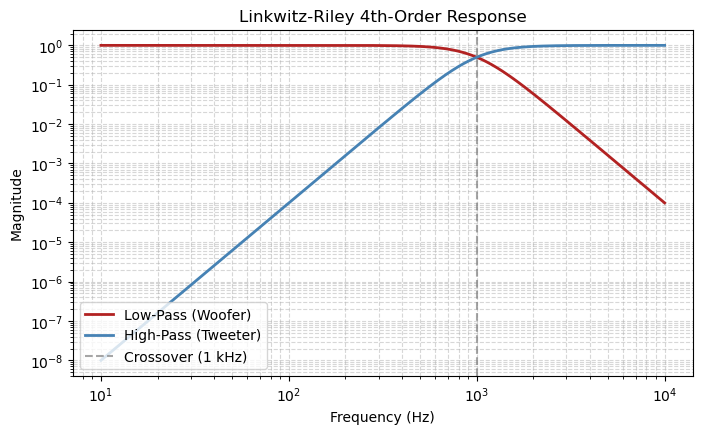
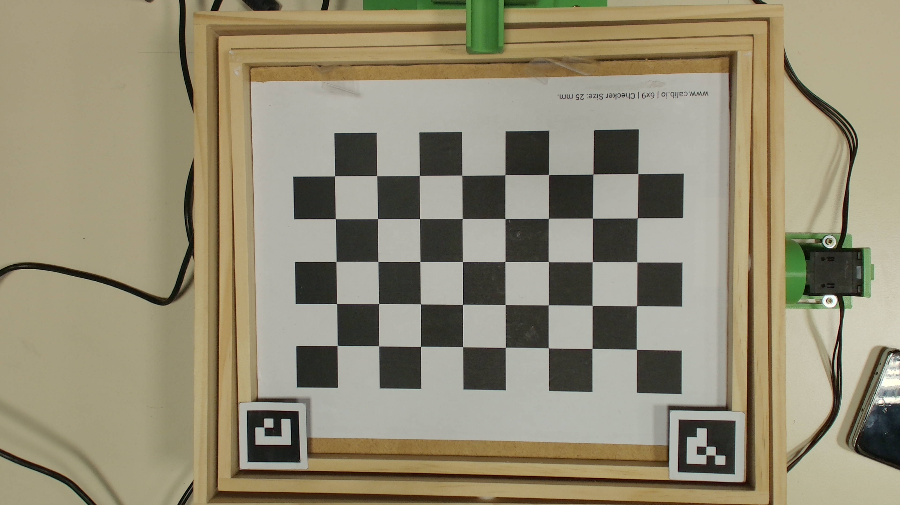

Design of a Hybrid Linkwitz-Riley 4 Crossover Filter
1 Introduction
This section provides an overview of the 4th-order Linkwitz-Riley (LR4) crossover filter. The hybrid approach combines both analog active circuitry and digital processing elements to achieve a flat amplitude response at the crossover frequency.
1.1 Filter Specifications
The primary design targets for this hybrid crossover network include: * Crossover Frequency (\(f_c\)): \(1\text{ kHz}\) * Filter Order: 4th-order (\(24\text{ dB/octave}\) attenuation slope) * Phase Response: \(0^\circ\) relative phase shift between outputs at crossover
1.2 System Architecture
The overall architecture of the hybrid crossover network splits the audio spectrum into high-pass (tweeter) and low-pass (woofer) bands.

As seen in Figure 1, the input signal is buffered before entering the active filter stages.
1.3 Mathematical Derivation
A standard Linkwitz-Riley 4th-order filter is constructed by cascading two identical 2nd-order Butterworth filters. The transfer function \(H(s)\) for the low-pass network can be expressed mathematically as:
\[H_{LP}(s) = \frac{1}{(s^2 + \sqrt{2}s + 1)^2}\]
Where the voltage gains of both cascading stages must match perfectly to maintain the ideal crossover characteristics.
1.4 Component Selection
The components chosen for the analog active operational amplifier implementation are summarized below.
| Component ID | Ideal Value | Chosen Value (Standard E96) | Tolerance | Function |
|---|---|---|---|---|
| \(R_1, R_2\) | \(15.91\text{ k}\Omega\) | \(15.8\text{ k}\Omega\) | \(1\%\) | Filter Node Resistors |
| \(C_1, C_2\) | \(10\text{ nF}\) | \(10\text{ nF}\) | \(5\%\) | Filter Node Capacitors |
| \(U_1\) | OPA2134 | OPA2134 | — | Low-Noise Audio Op-Amp |
As outlined in Table 1, standard resistor values are selected to match the ideal cutoff thresholds as closely as possible.
NoteDesign Constraint
Ensure that the operational amplifiers used have a high enough Slew Rate (SR) and Gain-Bandwidth Product (GBW) to avoid distortion in the high-frequency band limits of the audio spectrum.
2 Principle of Operation: The 5-Transistor OTA (5T-OTA)
A 5-transistor operational transconductance amplifier (5T-OTA) Figure 3 is a fundamental analog building block designed to convert a differential input voltage into an output current (\(G = I_{\text{out}}/V_{\text{in}}\)). Unlike standard operational amplifiers that ideally feature zero output resistance, an OTA is characterized by a high output resistance. In practical integrated circuits, these devices are often loaded capacitively to create high-gain voltage amplifiers.

The internal operation of an NMOS-input 5T-OTA can be broken down into three distinct operational stages:
2.0.1 NMOS Differential Pair (\(M_1, M_2\))
The differential pair serves as the primary “input stage” that senses the incoming voltage signals.
Function: \(M_1\) and \(M_2\) are matched NMOS devices biased by the tail current flowing from \(M_5\). When a differential input voltage is applied across their gates, it is converted into differential drain currents governed by the transconductance (\(g_{\text{m}}\)) of the transistors (Pretl et al. 2026).
Symmetry: In an ideal, perfectly matched scenario, if the two input voltages are identical, the tail current (\(I_{\text{tail}}\)) splits exactly in half (\(I_{\text{tail}}/2\)) down both branches.
2.0.2 NMOS Tail Current Mirror (\(M_5, M_6\))
This stage establishes the stable DC biasing environment required for the entire amplifier circuit.
Function: Transistors \(M_5\) and \(M_6\) form a current mirror. An external reference current (\(I_{\text{bias}}\)) is fed through the transistor \(M_6\), which is then mirrored directly into \(M_5\) (Pretl et al. 2026).
The Tail Current: \(M_5\) operates as the tail current source, defining the total bias current (\(I_{\text{tail}}\)) that passes through the input differential pair. This tail current is a critical design parameter, as it directly sets both the transconductance (\(g_{\text{m}}\)) and the overall speed of the amplifier.
2.0.3 PMOS Current Mirror Load (\(M_3, M_4\))
This final section acts as an active load for the input pair and performs the differential-to-single-ended signal conversion.
Function: Transistors \(M_3\) and \(M_4\) form a PMOS current mirror. The diode-connected \(M_3\) senses the changing current flowing through the left branch (\(M_1\)) and replicates it over to the right branch via \(M_4\) (Pretl et al. 2026).
Summing at the Output: At the single-ended output node, the mirrored current from \(M_4\) and the direct current from the right input branch (\(M_2\)) are subtracted/summed. When this net signal current is forced into the high-impedance output node, it builds up the final output voltage.
2.1 Transistor Sizing and \(g_{\text{m}}/I_{\text{D}}\) Selection Strategy
In a 5T-OTA, selecting the device sizes involves balancing fundamental trade-offs between speed, power efficiency, noise, and matching. Rather than applying a uniform \(g_{\text{m}}/I_{\text{D}}\) ratio across all devices, each sub-block is targeted with a specific transconductance efficiency to maximize overall circuit performance.
2.1.1 1. NMOS Input Differential Pair (\(M_1, M_2\))
For the input stage, a higher \(g_{\text{m}}/I_{\text{D}}\) value—typically in the range of 10 to 12 V⁻¹—is chosen to operate the devices in moderate inversion.
- Gain and Power Efficiency
- The primary goal of the input pair is to provide high transconductance (\(g_{\text{m}}\)) to maximize the amplifier’s gain. Biasing at a high \(g_{\text{m}}/I_{\text{D}}\) value achieves this required transconductance while consuming the absolute minimum current (\(I_{\text{D}}\)), maximizing power efficiency.
- Noise and Offset Optimization
- Maximizing the \(g_{\text{m}}/I_{\text{D}}\) ratio minimizes the overdrive voltage. This is a critical strategy for reducing the input offset voltage caused by threshold voltage mismatch between \(M_1\) and \(M_2\), while simultaneously minimizing the input-referred thermal noise.
2.1.2 2. PMOS Load (\(M_3, M_4\)) and NMOS Tail (\(M_5, M_6\)) Current Mirrors
For the current mirror and load network, a lower \(g_{\text{m}}/I_{\text{D}}\) value—typically in the range of 6 to 8 V⁻¹—is chosen to operate the devices in strong inversion.
- Current Matching Accuracy
- For current mirrors, matching accuracy takes priority over transconductance efficiency. A lower \(g_{\text{m}}/I_{\text{D}}\) ratio dictates a larger overdrive voltage (\(V_{\text{GS}} - V_{\text{th}}\)). This larger overdrive significantly reduces current mismatch arising from local threshold voltage variations (\(\Delta V_{\text{th}}\)) across the mirrors.
- Output Resistance and DC Gain
- Operating these current sources at a lower \(g_{\text{m}}/I_{\text{D}}\) alongside longer channel lengths maximizes their output resistance (\(r_0\)). This improves both the mirroring precision and the overall DC voltage gain of the OTA.
- Noise Suppression
- To reduce the total output noise contribution of the OTA, the transconductance of the load transistors (\(g_{\text{m3,4}}\)) must be kept significantly lower than the transconductance of the input pair (\(g_{\text{m1,2}}\)). Biasing the load devices at a lower \(g_{\text{m}}/I_{\text{D}}\) ensures their individual transconductance remains small, dropping their noise contribution.
2.1.3 3. Summary Sizing Targets and Trade-offs
The table below outlines the final targeted \(g_{\text{m}}/I_{\text{D}}\) configuration and the core trade-offs managing the 5T-OTA architecture, further narrowing the no of combinations. To streamline the simulation and optimization phase, the design space was restricted to tight \(g_{\text{m}}/I_{\text{D}}\) windows. This dramatically reduces the number of design permutations and sweeps required during circuit characterization.
| Transistor Group | Inversion Region | Targeted \(g_{\text{m}}/I_{\text{D}}\) Value | Key Design Priorities |
|---|---|---|---|
| Input Pair (\(M_1, M_2\)) | Moderate Inversion | 10 to 12 V⁻¹ | High gain, low power consumption, minimized offset. |
| PMOS Load (\(M_3, M_4\)) | Strong Inversion | 6 to 8 V⁻¹ | Low noise contribution, high output resistance, and precise current matching. |
| NMOS Tail (\(M_5, M_6\)) | Strong Inversion | 6 to 8 V⁻¹ | High output resistance for stable biasing and precise current replication. |
2.1.4 Transistor Sizing and Architecture for the 5T-OTA
To determine the physical dimensions of the transistors within the 5T-OTA architecture, \(g_m/I_D\) design methodology utilizes pre-characterized technology lookup tables
2.1.5 Design Specification & Reference Parameters
The circuit dimensioning is driven by explicit performance targets, including bandwidth, capacitive loading, and transistor geometry constraints. The primary design inputs and initial assumptions are structured in Table 2.
| Parameter | Symbol | Initial Value / Target |
|---|---|---|
| Load Capacitance | \(C_{\mathrm{load}}\) | \(50\text{ fF}\) |
| Target Bandwidth (-3dB Buffer) | \(f_{\mathrm{bw}}\) | \(10\text{ MHz}\) |
| Input Pair Efficiency Target | \((g_m/I_D)_{1,2}\) | \(10\text{ V}^{-1}\) |
| Active Load Efficiency Target | \((g_m/I_D)_{3,4}\) | \(5\text{ V}^{-1}\) |
| Tail Source Efficiency Target | \((g_m/I_D)_{5,6}\) | \(5\text{ V}^{-1}\) |
| Assigned Channel Length (All) | \(L_{1-6}\) | \(5\text{ }\mu\text{m}\) |
| External Reference Bias Input | \(I_{\mathrm{bias,in}}\) | \(20\text{ }\mu\text{A}\) |
| Maximum Total Current Limit | \(I_{\mathrm{total,limit}}\) | \(10\text{ }\mu\text{A}\) |
2.1.6 Sizing Derivations & Mathematical Formulations
2.1.6.1 Input Pair Transconductance (\(g_m\)) Extraction
The required transconductance for the differential input pair (\(M_{1/2}\)) is directly tied to the unity-gain bandwidth requirement of the system configuration. To protect against process, voltage, and temperature (PVT) variations, alongside parasitic transistor self-loading, a safety scaling factor of \(3\) is introduced into the fundamental bandwidth equation:
\[g_{m1,2} = f_{\mathrm{bw}} \cdot 3 \cdot 4\pi \cdot C_{\mathrm{load}}\]
Substituting our core specifications (\(10\text{ MHz}\) and \(50\text{ fF}\)), the script calculates the necessary small-signal capability:
\[g_{m1,2} = 10\text{ MHz} \cdot 3 \cdot 4\pi \cdot 50\text{ fF} \approx 0.0188\text{ mS}\]
2.1.6.2 Bias Current Evaluation
By establishing the transconductance efficiency parameter \((g_m/I_D)_{1,2} = 10\), the single-branch bias current (\(I_{D1,2}\)) can be isolated:
\[I_{D1,2} = \frac{g_{m1,2}}{(g_m/I_D)_{1,2}}\]
The total tail current required from current source \(M_5\) corresponds to both operational branches:
\[I_{\mathrm{total}} = 2 \cdot I_{D1,2} \approx 3.76\text{ }\mu\text{A}\]
To comply with standard layout grids and bias generation modules, this value is rounded up to a clean operational baseline of \(4.0\text{ }\mu\text{A}\) (\(I_{D1,2} = 2.0\text{ }\mu\text{A}\)).
2.1.6.3 Gate Voltage & Physical Width Mapping
Operating at a fixed bias length (\(L = 5\text{ }\mu\text{m}\)), the calculated current and target efficiency points are mapped to the semiconductor technology databases to track their native gate-to-source voltage drops (\(V_{\mathrm{GS}}\)):
Using the technology-specific current density value per micrometer of transistor width (\(I_D/W\)) provided by the lookup tables at these operating points, the physical widths (\(W\)) are computed via:
\[W = \frac{I_D}{(I_D/W)}\]
and rounded
2.1.6.4 External Bias Current Mirroring (\(M_6\))
To mirror the incoming off-chip reference current (\(20\text{ }\mu\text{A}\)) down to our internal tail target (\(4\text{ }\mu\text{A}\)), the geometry of the receiving diode-connected transistor (\(M_6\)) is scaled proportionally against the dimensions of \(M_5\):
\[W_6 = W_{5,\mathrm{round}} \cdot \frac{I_{\mathrm{bias,in}}}{I_{\mathrm{total}}}\]
2.1.6.5 Open-Loop DC Gain Derivation
The open-loop DC voltage gain (\(A_0\)) of a single-stage 5T-OTA is defined by the transconductance of the input pair relative to the combined output conductances (\(g_{\mathrm{ds}}\)) of both the input transistors and the active loads.
The total small-signal DC voltage gain is expressed using the following equation:
\[A_0 = \frac{g_{m1,2}}{g_{\mathrm{ds}1,2} + g_{\mathrm{ds}3,4}}\]
We can use the readly available sizing document to size a basic 5T-OTA, based on the input design parameters the document caculates the sizing for each transistor and other parameters like the gain, noise, power consumption and settling time. A sizing document is available at (Pretl et al. 2026)
2.2 Transition to a Two-Stage OTA Architecture
2.2.1 Why the 5T-OTA is Insufficient for Audio
While the basic 5T-OTA is simple and efficient, it is not suitable for an audio amplifier because its open-loop DC gain is only \(34.8\text{ dB}\) (around \(55\text{ V/V}\)). High-fidelity audio applications demand significantly more gain to ensure precise signal reproduction, minimize output distortion, and keep gain errors low.
Because a single transistor stage cannot provide enough amplification on its own, we must transition to a Two-Stage OTA architecture as suggested in (Pretl et al. 2026).
2.2.2 The Two-Stage Gain Equation
By cascading a second amplification stage directly after the initial differential stage, the total open-loop gain is multiplied together. The resulting total DC voltage gain is defined by the following equation:
\[A_{\mathrm{OL, total}} = A_{v1} \cdot A_{v2}\]
Where: \(A_{\mathrm{OL, total}}\) is the total open-loop DC gain of the system. \(A_{v1}\) is the voltage gain of the first stage (the differential input pair). \(A_{v2}\) is the voltage gain of the second stage (the common-source output stage).
This structural change easily pushes the total gain into the desired range for audio quality, while the added Miller compensation network (\(C_\mathrm{M}\) and \(R_\mathrm{Z}\)) ensures the entire circuit remains stable.
2.3 Transistor Sizing and Architecture for the 2-Stage Miller OTA
Integral part of an Linkwitz-Riley 4 Crossover Filter is an amplifier, and a 2-stage OTA is a good option as it offers high gain and is begginer friendly to design. A 2-stage OTA is essentially an 5-T OTA and a PMOS common source ampliflier cascaded with a Miller compensation capacitor \(C_{\text{M}}\) and a Null resistor \(R_{\text{Z}}\) as shown in Figure 4.

There are 4 major aspects of this OTA the input differential pair, pmos current mirrors, output gain PMOS, and tail current NMOS’s. The sizing of these transistors is done using gm/Id methodology.
2.3.1 1. Design Specification & Reference Parameters
The core target constraints, technology limits, and initial efficiency definitions guiding the automation loop are outlined in Table 3.
| Parameter | Symbol | Initial Value / Target |
|---|---|---|
| Load Capacitance | \(C_{\mathrm{load}}\) | \(1\text{ pF}\)[cite: 3] |
| Target Bandwidth (-3dB Buffer) | \(f_{\mathrm{bw}}\) | \(10\text{ MHz}\)[cite: 3] |
| Input Pair Efficiency Target | \((g_m/I_D)_{1,2}\) | \(11\text{ V}^{-1}\)[cite: 3] |
| Active Load Efficiency Target | \((g_m/I_D)_{3,4}\) | \(7\text{ V}^{-1}\)[cite: 3] |
| CS Driver Efficiency Target | \((g_m/I_D)_{5}\) | \(10\text{ V}^{-1}\)[cite: 3] |
| Current Mirror Efficiency Target | \((g_m/I_D)_{6,7,8}\) | \(6\text{ V}^{-1}\)[cite: 3] |
| Assigned Channel Length (All) | \(L_{1-8}\) | \(2\text{ }\mu\text{m}\)[cite: 3] |
| Target Open-Loop DC Gain | \(A_0\) | \(\ge 60\text{ dB}\)[cite: 3] |
| Core Current Draw Budget | \(I_{\mathrm{limit}}\) | \(\le 30\text{ }\mu\text{A}\)[cite: 3] |
2.3.2 2. Sizing Derivations & Mathematical Formulations
2.3.2.1 Step A: Compensation Allocation & First-Stage Sizing
To shield the circuit from high-frequency stability decay, a Miller capacitance (\(C_\mathrm{M}\)) is introduced relative to the total output load[cite: 3]:
\[C_\mathrm{M} = 0.5 \cdot C_{\mathrm{load}} = 500\text{ fF}\][cite: 3]
The input pair transconductance (\(g_{m1,2}\)) calculation incorporates a protective \(3\times\) multiplier scaling to safeguard the target bandwidth against local process tracking shifts[cite: 3]:
\[g_{m1,2,\mathrm{ideal}} = 3 \cdot (2\pi f_{\mathrm{bw}}) \cdot C_\mathrm{M} \approx 0.09425\text{ mS}\][cite: 3]
Dividing by the efficiency parameter \((g_m/I_D)_{1,2} = 11\), the branch current yields a total ideal tail allocation of \(I_{\mathrm{tail,ideal}} \approx 17.14\text{ }\mu\text{A}\)[cite: 3]. Quantizing this to a regular layout grid (steps of \(0.5\text{ }\mu\text{A}\)) locks in our tail profile[cite: 3]:
- Tail Current Source (\(I_{\mathrm{tail}}\)): \(17.00\text{ }\mu\text{A}\)[cite: 3]
- True Branch Current (\(I_{D1,2}\)): \(8.50\text{ }\mu\text{A}\)[cite: 3]
- True Manufactured Transconductance (\(g_{m1,2}\)): \(11 \cdot 8.5\text{ }\mu\text{A} = \mathbf{0.09350\text{ mS}}\)[cite: 3]
2.3.2.2 Step B: Second-Stage Stability & Resistor Calibration
To guarantee a robust phase margin, the secondary transconductance stage (\(M_5\)) must easily out-pace the target operational bandwidth boundary via an image-sizing coefficient rule[cite: 3]:
\[g_{m5,\mathrm{req}} = 2.2 \cdot f_{\mathrm{bw}} \cdot 2\pi \cdot C_{\mathrm{load}} \approx 0.13823\text{ mS}\][cite: 3]
Dividing this by its distinct parameter \((g_m/I_D)_5 = 10\) establishes the analytical current demand \(I_{D5,\mathrm{req}} = 13.823\text{ }\mu\text{A}\)[cite: 3]. Mirror scaling constraints align the true current flow down to exactly \(10.00\text{ }\mu\text{A}\) based on physical layout sizes[cite: 3]. At this grid point, the driver generates its final small-signal capability:
\[g_{m5} = (g_m/I_D)_5 \cdot I_{D5} = 10 \cdot 10\text{ }\mu\text{A} = \mathbf{0.10000\text{ mS}}\][cite: 3]
The zero-nulling frequency compensation resistance (\(R_z\)) is set to cancel the right-half-plane (RHP) zero generated across the Miller framework[cite: 3]:
\[R_z = \frac{2}{g_{m5}} = \mathbf{20.00\text{ k}\Omega}\][cite: 3]
2.3.3 3. Sizing Optimization Results
The physical layout dimensions established by mapping the grid current data back to the pygmid database lookup functions are structured in Table 4.
| Transistor Group | Geometric Layout Role | Width (\(W\)) | Length (\(L\)) |
|---|---|---|---|
| \(M_{1/2}\) | NMOS Input Differential Pair | \(2.5\text{ }\mu\text{m}\) | \(2\text{ }\mu\text{m}\) |
| \(M_{3/4}\) | PMOS Active First-Stage Load | \(3.5\text{ }\mu\text{m}\) | \(2\text{ }\mu\text{m}\) |
| \(M_5\) | PMOS Common-Source Output Driver | \(9.5\text{ }\mu\text{m}\) | \(2\text{ }\mu\text{m}\) |
| \(M_6\) | NMOS External Reference Bias Input Receiver | \(2.0\text{ }\mu\text{m}\) | \(2\text{ }\mu\text{m}\) |
| \(M_7\) | NMOS First-Stage Tail Current Mirror | \(1.5\text{ }\mu\text{m}\) | \(2\text{ }\mu\text{m}\) |
| \(M_8\) | NMOS Second-Stage Output Active Load | \(1.0\text{ }\mu\text{m}\) | \(2\text{ }\mu\text{m}\) |
2.3.4 4. Open-Loop DC Gain & Performance Evaluation
By splitting the design across cascaded active blocks, the total system gain successfully clears the targets required for robust distortion control. The cumulative performance metrics are detailed in Table 5.
| Performance Metric | Design Value | Status / Constraint |
|---|---|---|
| Stage 1 Gain (\(A_1\)) | \(31.6\text{ dB}\)[cite: 3] | Primary Voltage Boost[cite: 3] |
| Stage 2 Gain (\(A_2\)) | \(34.3\text{ dB}\)[cite: 3] | Secondary Common-Source Boost[cite: 3] |
| Total Open-Loop Gain (\(A_0\)) | \(65.9\text{ dB}\)[cite: 3] | Passed (\(\ge 60\text{ dB}\) Target)[cite: 3] |
| Voltage Gain Error (\(\epsilon\)) | \(-0.1\%\)[cite: 3] | Minimizes Closed-Loop Tracking Shifts[cite: 3] |
| Core Branch Current Draw | \(27.00\text{ }\mu\text{A}\)[cite: 3] | Passed (\(\le 30.00\text{ }\mu\text{A}\) Budget)[cite: 3] |
| Peak Power Dissipation | \(72.85\text{ }\mu\text{W}\)[cite: 3] | Simulated at \(V_{\mathrm{DD,max}} = 1.55\text{ V}\)[cite: 3] |
| Effective Miller Load (\(C_{\mathrm{M,eff}}\)) | \(599.54\text{ fF}\)[cite: 3] | Includes \(99.54\text{ fF}\) internal parasitics[cite: 3] |
| Predicted Layout UGBW | \(24.82\text{ MHz}\)[cite: 3] | Exceeds \(10\text{ MHz}\) baseline specification[cite: 3] |
2.4 Frequency Response and Stability Analysis: 5T vs. 2-Stage Miller OTA
2.4.1 1. 5T OTA Performance with \(L = 5\ \mu\text{m}\)
The initial design of a single-stage 5T Operational Transconductance Amplifier (OTA) targeted an audio-frequency Unity-Gain Bandwidth (UGBW) of 10 MHz. Using a large channel length of \(L = 5\ \mu\text{m}\) was successful in this architecture. Because a 5T OTA is a single-stage topology, its frequency response is dictated by a single dominant pole at the output. Any secondary, non-dominant poles lie far enough beyond the 10 MHz target that they do not impact loop stability.
2.4.2 2. 2-Stage Miller OTA: The \(L = 5\ \mu\text{m}\) Instability
When expanding the design to a 2-Stage Miller-Compensated OTA using the same \(L = 5\ \mu\text{m}\) for the gain stages, the frequency response exhibited prominent peaking (“bumps”) at high frequencies, indicating a severe degradation of Phase Margin and potential circuit instability.
To diagnose this, the \(f_{\text{T}}\) vs. \(g_{\text{m}}/I_{\text{D}}\) characteristic plot for the sg13_lv_nmos device was analyzed: * For \(L = 5\ \mu\text{m}\), the transit frequency (\(f_{\text{T}}\)) curve is nearly completely flat across the moderate inversion region (\(g_{\text{m}}/I_{\text{D}} = 10 \text{ to } 15\text{ S/A}\)), hovering at a very low absolute value. * This flatness demonstrates that at \(L = 5\ \mu\text{m}\), the transistor’s local speed capability is heavily restricted regardless of the biasing condition. * In a 2-stage amplifier, the second gain stage creates a critical non-dominant pole. Because the \(L = 5\ \mu\text{m}\) device is fundamentally limited in speed, this non-dominant pole was trapped too close to the target 10 MHz UGBW, leading to the observed high-frequency peaking.
2.4.3 3. Optimization and Resolution via \(L = 2\ \mu\text{m}\)
Based on the insights from the \(f_{\text{T}}\) plot, the channel length was reduced to \(L = 2\ \mu\text{m}\) to shift the device operating point onto a higher, more dynamic speed curve.
- Result: Decreasing \(L\) successfully pushed the non-dominant pole to a significantly higher frequency, well out of the way of the audio bandwidth.
- Combined with a minor increase in the Miller compensation capacitance (\(C_{\text{M}}\)) to cleanly split the poles, the high-frequency bumps were completely eliminated. This yielded a smooth, stable open-loop roll-off with a robust phase margin and a well-defined UGBW of 10 MHz.
3 References
L., Alberto. 2025. “Understanding Miller Compensation: A Guide to Frequency Stability.” Mis Circuitos, July 1. https://miscircuitos.com/understanding-miller-compensation-a-guide-to-frequency-stability/.
Lenka, Trupti Ranjan, Durgamadhab Misra, and Arindam Biswas, eds. 2022. Micro and Nanoelectronics Devices, Circuits and Systems: Select Proceedings of MNDCS 2021. Vol. 781. Lecture Notes in Electrical Engineering. Springer Singapore. https://doi.org/10.1007/978-981-16-3767-4.
Meiners, Mirco. 2026. Lecture Notes on Analogue and Mixed-Signal Circuit Design. Hochschule Bremen; Lecture Script, Hochschule Bremen.
Nagulapalli, Rajasekhar, K. Hayatleh, and B. Seetharamulu. 2019. “A Low Power Miller Compensation Technique for Two Stage Op-Amp in 65nm CMOS Technology.” International Conference on Computing, Communication and Networking Technologies (ICCCNT), July. https://doi.org/10.1109/ICCCNT45670.2019.8944553.
Pretl, Harald, Michael Koefinger, and Simon Dorrer. 2026. “Analog (Integrated) Circuit Design.” July 8. https://doi.org/10.5281/zenodo.14387481.
Repaka, Sriram, and Mula Vishnu Sunkari. 2026. “Principles of Analog Integrated Circuit Design: Project Research and AI Queries Workspace.” Google NotebookLM, July 12. https://notebooklm.google.com/notebook/85f01d3f-9b45-4491-9ec5-7ac7e00f9fc7.